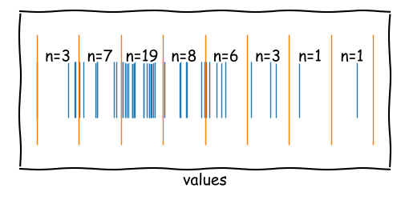

02. Data Characterization 2
When analyzing replicates of a sample, the results are often not identical.
The variability of the results can be described by a distribution.
The shape of the distribution is characterized by the process that generates the data.
Our task as chemometricians is to analyze and interpret these distributions.
Let's start with the most simple distribution: the uniform distribution.
Imagine rolling a fair dice with 6 faces and 6 numbers (1, 2, 3, 4,
5, 6).
How are the individual numbers distributed?
The uniform distribution is a single random process where each outcome has the
same probability.
However, most natural processes/systems are based on combinations of
multiple random processes
which lead to more complex distributions.
By modifying our dice experiment we can simulate such complex distributions.
before: roll 1000 dice
individuallynow: roll 30 dice at once,
consider the mean and
repeat this 1000 times
The normal distribution is the most important distribution in statistics.
It is characterized by a bell-shaped curve and is symmetric around the mean.
\[ f(x) = \frac{1}{\sigma \sqrt{2\pi}} e^{-\frac{1}{2} \left(\frac{x-\mu}{\sigma}\right)^2} \] \[ F(x) = \frac{1}{2} \left[1 + \text{erf}\left(\frac{x-\mu}{\sigma \sqrt{2}}\right)\right] \]
Where \(\mu\) is the mean, \(\sigma\) is the standard deviation, and \(\text{erf}\) is the error function.
The PDF (probability density function) describes the probability of a random variable falling
within a particular range of values.
The probability in a range is given by the area under the curve.
The CDF (cumulative distribution function) describes the probability that a random variable
will be found at a value less than or equal to a given value.
Let's assume we have a normal distribution with a mean of \(\mu = 0\) and a standard
deviation of \(\sigma = 1\).
What is the probability that a random variable will be found between -1 and 1?
We can calculate this by integrating the PDF between -1 and 1.
The Integral of the PDF is the CDF.
x1 = -1
cdf_x1 = 0.5 * (1 + erf(x1/sqrt(2)))>> cdf_x1 = 0.15865525393145707x2 = 1
cdf_x2 = 0.5 * (1 + erf(x2/sqrt(2)))>> cdf_x2 = 0.8413447460685429
The probability that a random variable will be found between -1 and 1 is:
\(0.8413 -
0.1587 = 0.6826\).
The t-distribution, also known as Student's t-distribution, is used in
statistics when the sample size is small, and the population standard deviation is unknown.
It is similar to the normal distribution, but with fatter tails.
The t-distribution approaches the normal distribution as the sample size increases.
The t-distribution is commonly used in hypothesis testing and in the construction of
confidence intervals.
The t-distribution is defined by its probability density function (PDF).
\[ f(x) = \frac{\Gamma\left(\frac{v+1}{2}\right)}{\sqrt{v \pi} \Gamma\left(\frac{v}{2}\right)} \left(1 + \frac{x^2}{v}\right)^{-\frac{v+1}{2}} \]
Where \(\Gamma\) is the Gamma function and \(v\) is the degrees of freedom.
The cumulative distribution function (CDF) of the t-distribution.
\[ F(x) = 1 - \frac{1}{2} I_{\frac{v}{v + x^2}}\left(\frac{v}{2}, \frac{1}{2}\right) \]
Where \(I\) is the regularized incomplete Beta function and \(v\) is the degrees of freedom.
The F-distribution arises when comparing two variances and depends on two parameters:
degrees of freedom \(d_1\) and \(d_2\).
By adjusting the degrees of freedom, you can observe how the shape of the F-distribution changes.
As \(d_1\) and \(d_2\) increase, the F-distribution approaches a normal distribution.
The F-distribution is defined by its probability density function (PDF).
\[ f(x) = \frac{\left( \frac{d_1}{d_2} \right)^{\frac{d_1}{2}} x^{\frac{d_1}{2} - 1}}{B\left(\frac{d_1}{2}, \frac{d_2}{2}\right) \left(1 + \frac{d_1}{d_2}x\right)^{\frac{d_1 + d_2}{2}}} \]
Where \(d_1\) and \(d_2\) are the degrees of freedom and \(B\) is the Beta function.
The cumulative distribution function (CDF) of the F-distribution.
\[ F(x) = I_{\frac{d_1 x}{d_1 x + d_2}}\left(\frac{d_1}{2}, \frac{d_2}{2}\right) \]
Where \(I\) is the regularized incomplete Beta function and \(d_1\), \(d_2\) are the degrees of freedom.
x = [47.59, 50.96, 49.92, 51.93, 49.10,
51.17, 49.68, 48.56, 51.79, 48.61,
52.00, 47.58, 46.41, 48.78, 49.45,
50.31, 49.58, 52.12, 53.82, 47.04,
48.99, 49.70, 51.22, 52.76, 50.94,
54.60, 48.35, 48.85, 47.53, 54.80,
49.79, 50.25, 49.02, 49.86, 49.09,
55.77, 49.76, 48.25, 45.15, 52.60,
46.88, 51.95, 58.10, 52.41, 46.71,
49.47, 48.73, 49.01, 46.67]We have recorded some data. After processing, we obtained the results shown on the left.
What are the characteristics of this data?
How many data points were recorded?
What is the range of the data?
How does the distribution look like?
Are there any outliers?
A very powerful tool for data characterization is the Whisker Boxplot.
The data series is shown as a box with two range indicators.
We obtain information about:
Median
Symmetry
Range
Outlier Candidates
The first step will be sorting your data.
We divide the sorted data into four groups with mostly equal number of members.
Between these four groups, there are three edges (called quartiles: Q1, Q2, Q3).
Q1 Splits the data into 25% lowest and 75% highest values.
Q2 Splits the data into 50% lowest and 50% highest values.
Q3 Splits the data into 75% lowest and 25% highest values.
x = [45.15, 46.41, 46.67, 46.71, 46.88,
47.04, 47.53, 47.58, 47.59, 48.25,
48.35, 48.56, 48.61, 48.73, 48.78,
48.85, 48.99, 49.01, 49.02, 49.09,
49.10, 49.45, 49.47, 49.58, 49.68,
49.70, 49.76, 49.79, 49.86, 49.92,
50.25, 50.31, 50.94, 50.96, 51.17,
51.22, 51.79, 51.93, 51.95, 52.00,
52.12, 52.41, 52.60, 52.76, 53.82,
54.60, 54.80, 55.77, 58.10]We already know, how to calculate the quartiles from former lecture.
Having calculated Q1, Q2, and Q3, the box is defined, ranging from Q1 to Q3.
This length is called interquartile range (IQR).
50 % of the data points are located inside the box.
The median (Q2) is shown as a line inside the box.
The more the the median is shifted to the top or bottom, the more asymmetric the data is.
To complete the boxplot, we need some information about the range of the data series compared to the IQR.
For this purpose, we add the fence to the boxplot describing the total range or a multiple (e.g. 1.5) of the IQR.
\[ \text{upper\_fence} =\\ \min \left( \max(x), Q3 + 1.5 \times IQR \right) \] \[ \text{lower\_fence} =\\ \max \left( \min(x), Q1 - 1.5 \times IQR \right) \]
Data outside the fence is plotted as individual points like
These points are considered as outliers.
*note: the black horizontal dashes show individual data points and aren't part of a boxplot.
Next to Boxplots, Histograms are nice tools for Data Characterization.
The data series is divided into several bins shown as bars.
Every bin covers a defined value range (mostly equidistant).
We obtain information about:
Mode
Distribution
Symmetry
Range
x = [45.15, 46.41, 46.67, 46.71, 46.88,
47.04, 47.53, 47.58, 47.59, 48.25,
48.35, 48.56, 48.61, 48.73, 48.78,
48.85, 48.99, 49.01, 49.02, 49.09,
49.10, 49.45, 49.47, 49.58, 49.68,
49.70, 49.76, 49.79, 49.86, 49.92,
50.25, 50.31, 50.94, 50.96, 51.17,
51.22, 51.79, 51.93, 51.95, 52.00,
52.12, 52.41, 52.60, 52.76, 53.82,
54.60, 54.80, 55.77, 58.10]The first step will be defining the bins.
To do so, we need the number of bins \(k\) or the bin width \(h\) first.
Here, we have serveral options; most common:
Sturges' Rule: \(k = 1 + \log_2(n)\)
Scott's Rule: \(h = \frac{3.5 \times \text{std}(x)}{n^{1/3}}\)
Freedman-Diaconis' Rule: \(h = 2 \times \text{IQR}(x) \times n^{-1/3}\)
Square-root Rule: \(k = \sqrt{n}\)
Manual: \(k = 5\)
... and many more.
Depending on the rule, we obtain:
Sturges' Rule: \(k = 1 + \log_2(49) = 7\)
Square-root Rule: \(k = \sqrt{49} = 7\)
Scott's Rule: \(h = \frac{3.5 \times 2.57}{49^{1/3}} = 2.46\)
Freedman-Diaconis' Rule: \(h = 2 \times 3.2 \times 49^{-1/3} = 1.75\)
We can transform \(k\) into \(h\) and vice versa. \[ h = \frac{\max(x) - \min(x)}{k} \]
Rule: k: h: (range: 12.95)
Sturges' 7 1.85
Square 7 1.85
Scott's 6 2.46
Freedman 8 1.75Using \(\min(x)\), \(k\), and \(h\), we can define the edges of the bins.
\[ \text{edge}(i) = \min(x) + i \times h \]
Sturges Square Scotts Freedman
= 45.1 45.1 45.1 45.1
= 47.0 47.0 47.5 46.8
= 48.9 48.9 49.9 48.5
= 50.8 50.8 52.3 50.2
= 52.7 52.7 54.7 51.9
= 54.6 54.6 57.1 53.6
= 56.5 56.5 59.5 55.3
= 58.4 58.4 57.0
= 58.7The bin centers are located between the edges.
After calculating the bin edges and centers, we can now count the data between two adjacent bins.
The number of data points within two edges represents the frequency and the height of the bar in the histogram.
In the example given, we can observe two local modes in the data series. With more bins, we can resolve these modes and get a better understanding of the data.